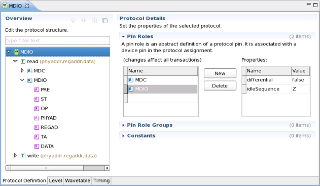
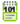
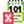
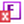
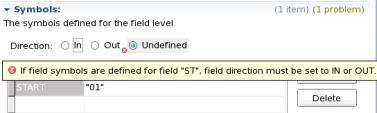

Protocol editor
The protocol editor is the graphical user interface used to set up and edit protocols as well es protocol specific levels, timing and wavetable.
It opens with the Protocol Definition tab per default.

Overview area
The overview area (left side) shows the structure of the protocol currently selected in the test program explorer.
Icon |
Description |
Icon indicating an error |
|---|---|---|
 |
Symbolizes a protocol. |
 |
Symbolizes transactions. |
||
Symbolizes pin roles. |
||
Symbolizes fields. |
 |
|
Symbolizes pin role groups used with parallel protocols. |
|
|
Undefined protocol element. Possible cause: name mismatch of pin role in protocol details and pin role details |
|
Details area
The details area (right side) will show different sections with different content related to the selected element.
Depending on the currently selected element of the protocol structure the detail area will show
- Protocol details
- Transaction details
- Pin role details
- Field detailsNote The protocol editor's preference settings control if sections are displayed extended or collapsed.
In case the protocol definition is erroneous the details area will provide further information when moving the mouse over the highlighted field.

Alternatively you may also use the Problems View. By double-clicking on a Protocol Marker type of error the cursor jumps to the error in the corresponding editor.
Protocol editor tabs
The tabs at the bottom of the protocol editor allow you to quickly switch between:
This way you can enter protocol relevant details, such as specific levels, timing, etc. very efficiently without leaving the protocol editor.
Functional changes
- Introduced in SmarTest 7.1.0
- SmarTest 7.1.3: Enhanced error handling and presentation.